SPECIMEN 02.A // BAS-RELIEF
Sculptural Botanical Wall Relief
Organic floral branch hand-sculpted in wet slaked lime plaster, integrating classical architectural relief directly into interior feature walls.
From zero-demolition 2–3 mm microcement overlays to breathable lime plasters, stone-burnished Tadelakt, and zero-VOC mineral coatings, every surface is hand-crafted to elevate residential and commercial architecture.
Applied in thin, mesh-reinforced layers totaling just 2–3 mm, our polymer-modified microcement delivers the monolithic look of poured architectural concrete without the structural weight, grout lines, or tear-out demolition.


Experience the timeless elegance of hand-troweled plaster. Our traditional plaster systems use natural lime, crushed marble, and clay to create walls with substantial depth, soft movement, and a cool, tactile finish that paint alone cannot achieve.
Beyond its visual warmth, traditional plaster is inherently durable and breathable, regulating indoor humidity to create a healthier living environment. Whether you prefer a polished, marble-like Venetian sheen or a rustic, old-world stone texture, we customize every application to suit your architectural style.
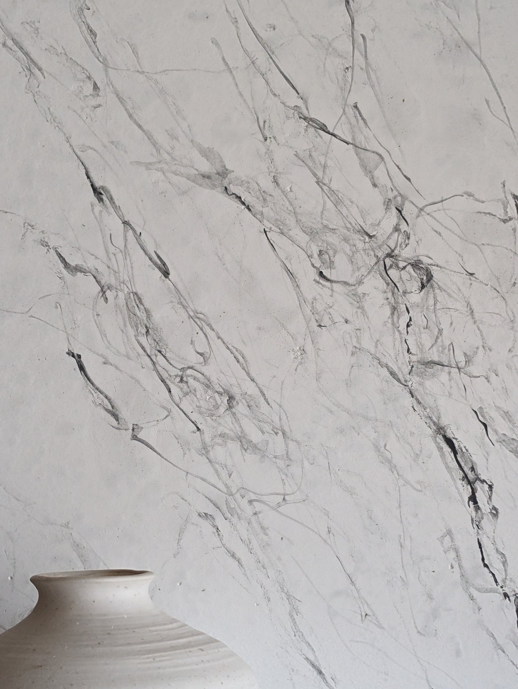
Tadelakt is an ancient Moroccan waterproof hydraulic lime plaster traditionally compressed with river stones and treated with black olive oil soap. The soap reacts chemically with the lime to form water-insoluble calcium soaps—creating a seamless, velvety, water-repellent surface.

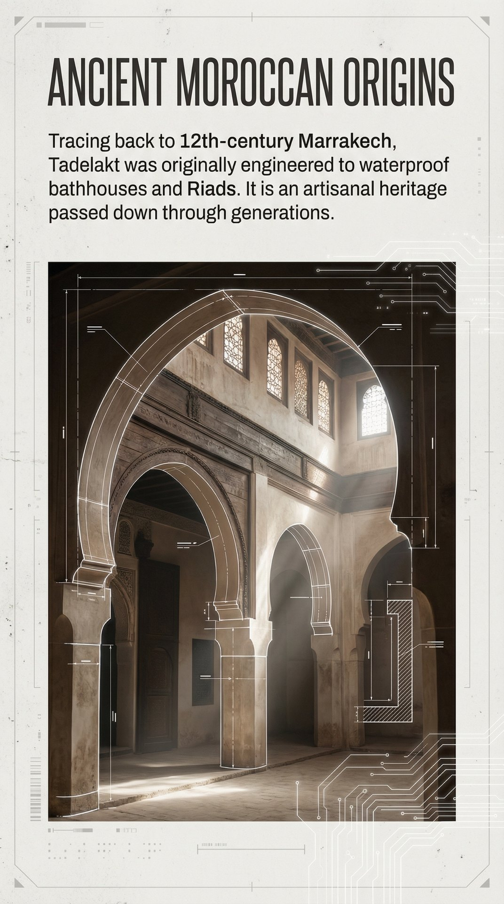
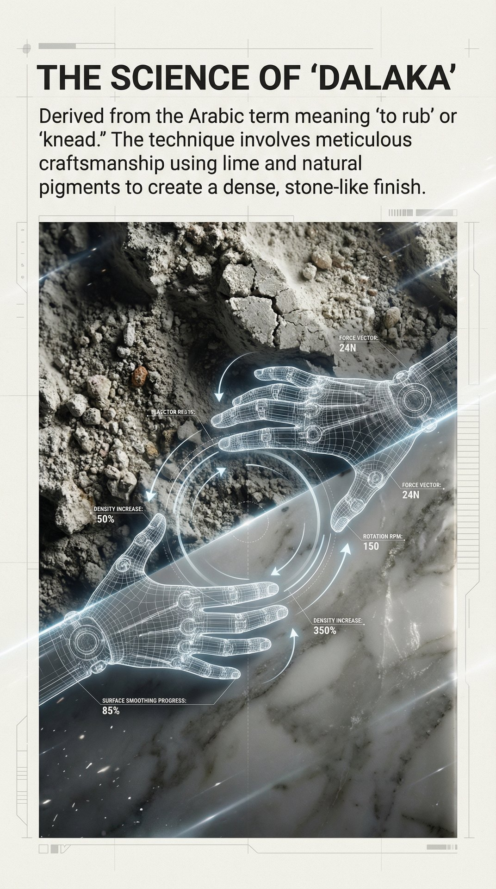
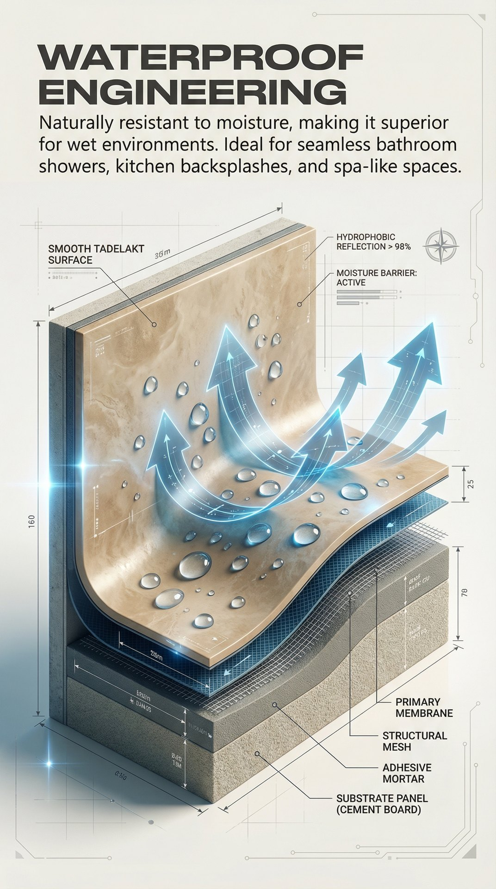
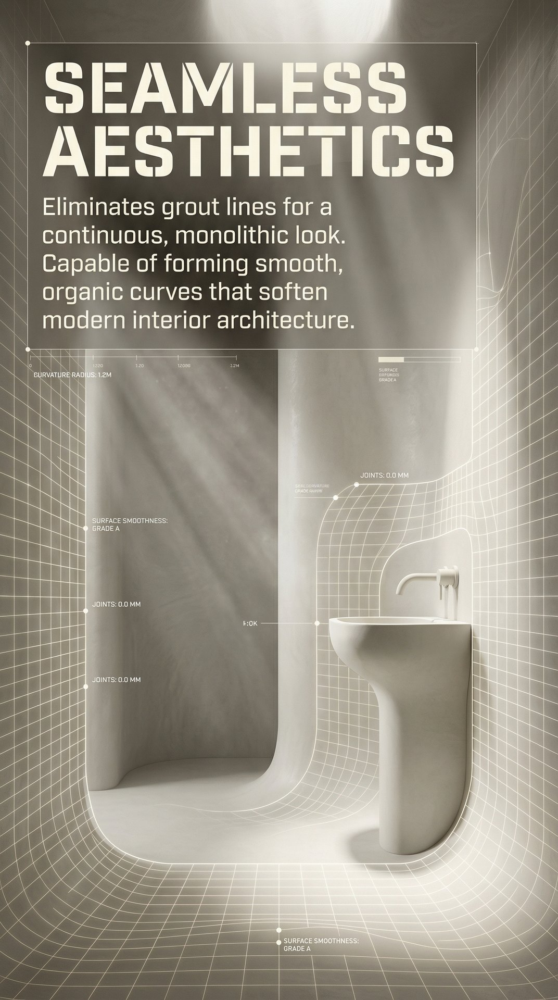
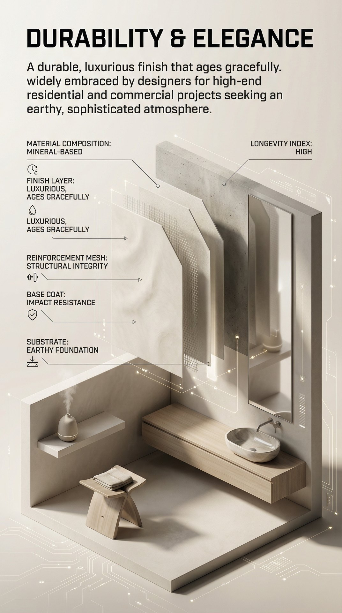

Unlike conventional acrylic or latex paints that seal walls in a non-breathable plastic film, our potassium silicate mineral paints and slaked-lime washes penetrate and chemically bond with the substrate.
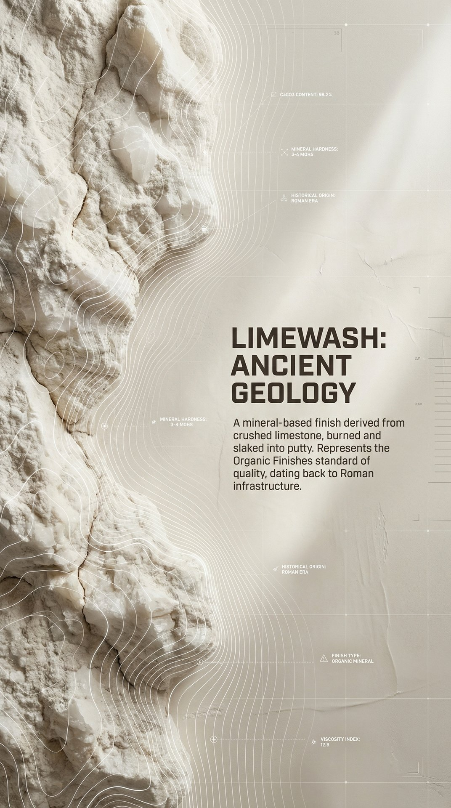
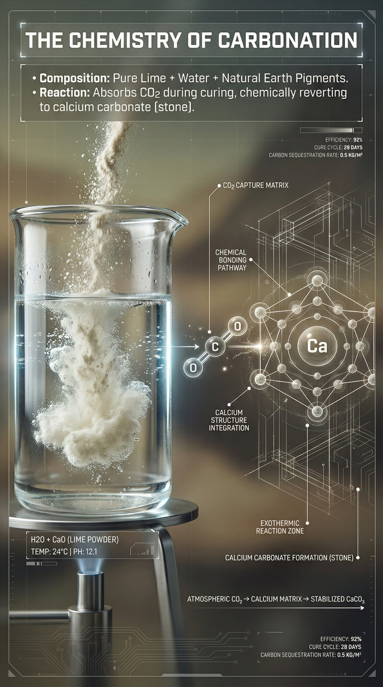
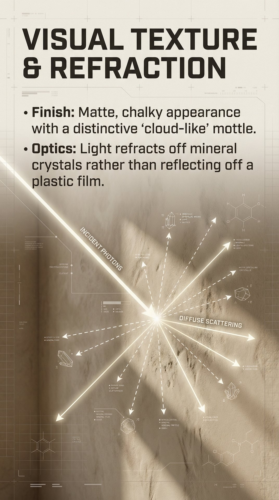
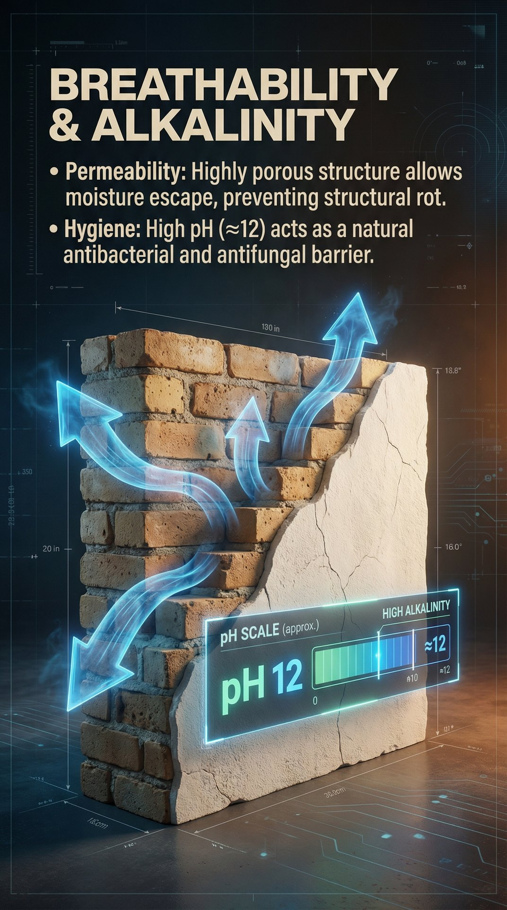
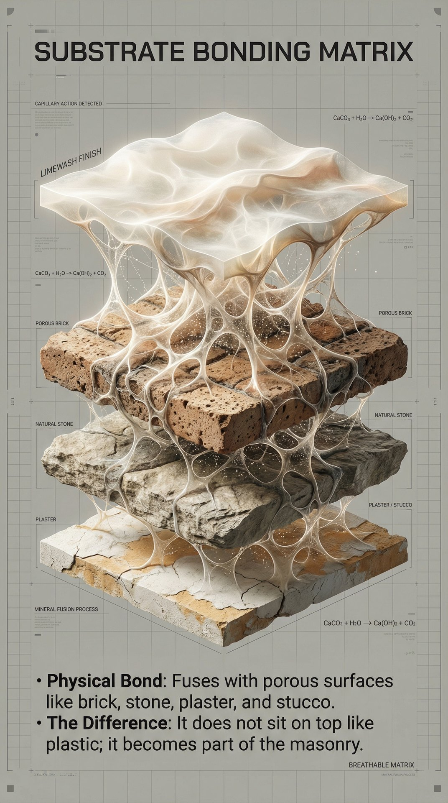
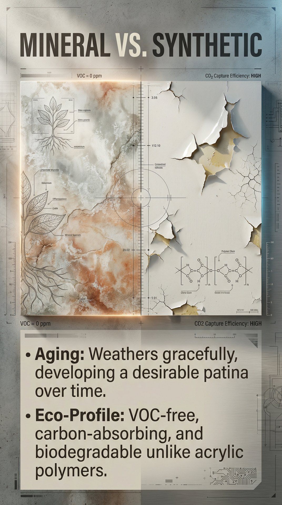
Transform the centerpiece of your living room, kitchen, or commercial lobby. We craft bespoke surface finishes tailored to your exact architectural millwork and masonry:

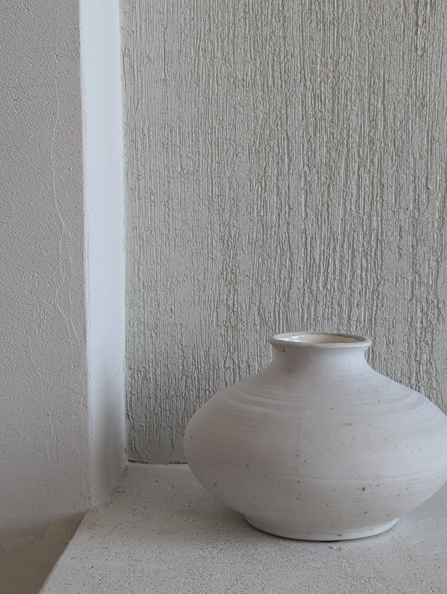
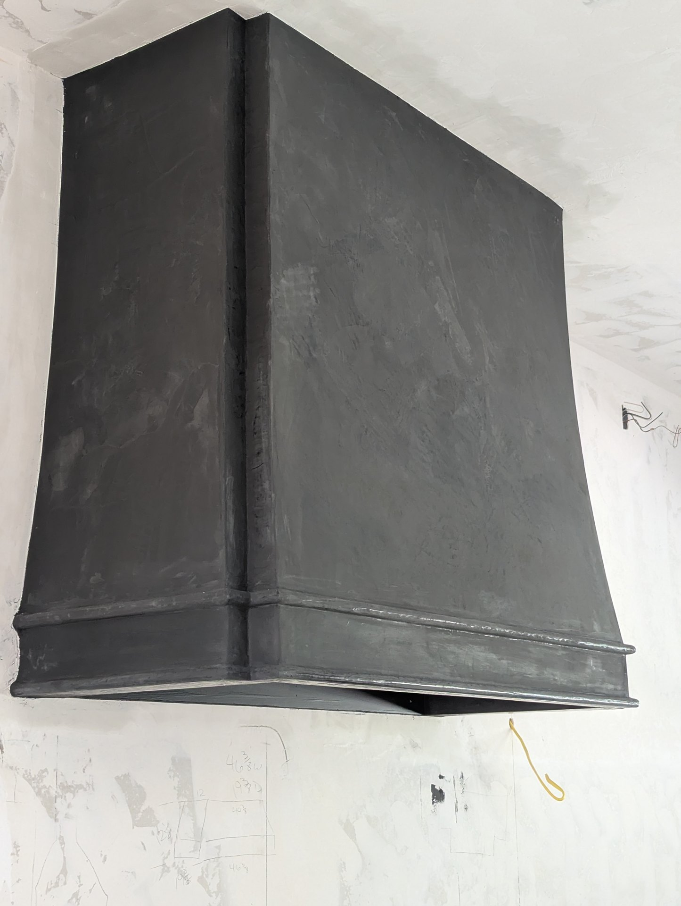
Organic Finishes LLC partners with luxury residential builders, interior design studios, and commercial GCs across Oklahoma, Texas, Arkansas, Kansas, and Missouri. We bring curated portfolio sample boards onsite for initial design reviews and estimates (with bespoke project-matched sample boards fabricated upon contract award and deposit), alongside substrate diagnostics, Festool HEPA dust-extracted surface preparation, and CSI Division 09 specification support (09 97 23 Lime- & Cement-Based Microcement Plaster • 09 24 00 Cement Plastering • 09 26 00 Veneer Plastering • 09 94 00 Decorative Finishing • 09 67 23 Seamless Flooring & Wall Systems).
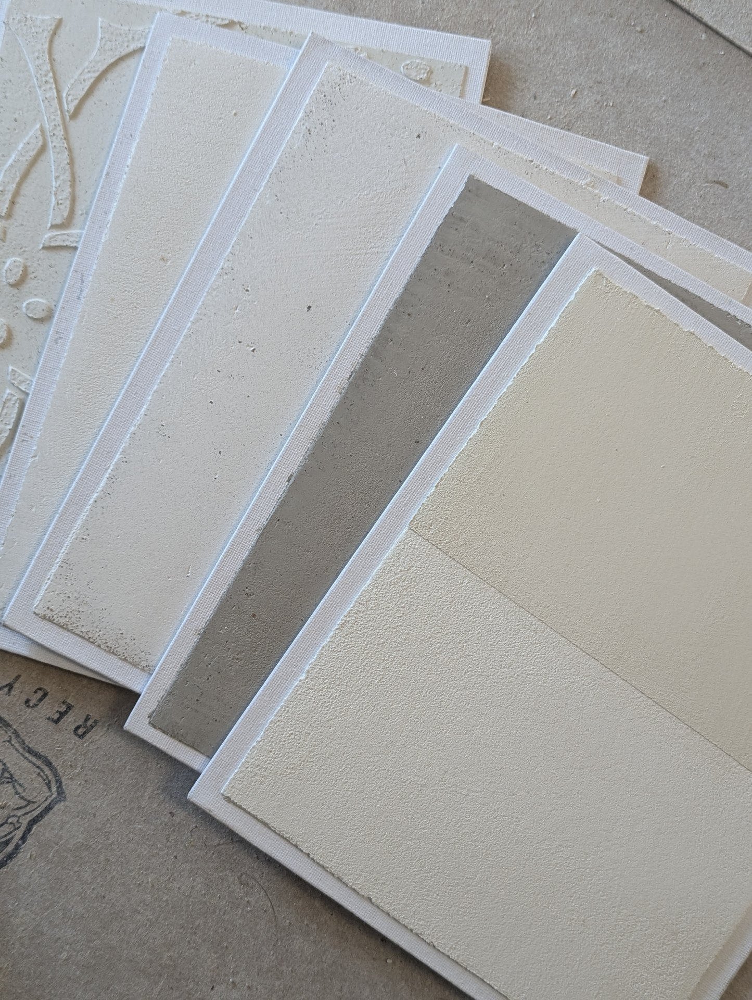